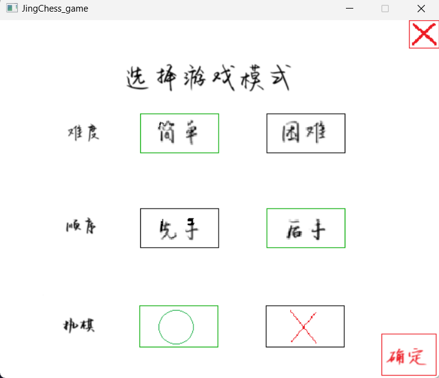
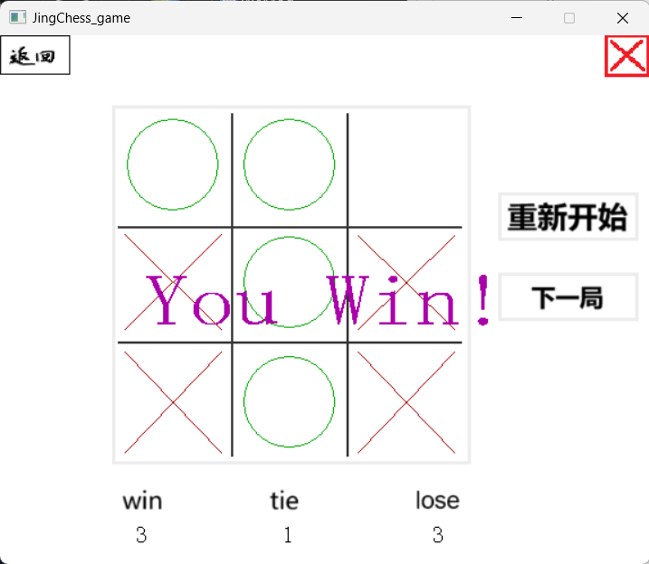
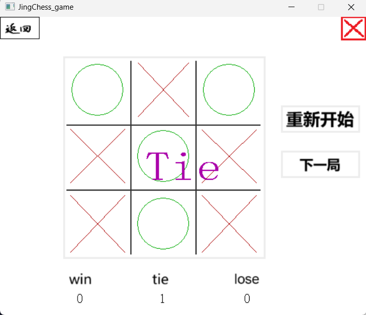

摘要：本文给出了windows下基于easyx库的C语言编写的简单应用。
preface: 本项目为基于easyx库下开发的井字棋游戏。图形化界面、简易，具体效果如下：



点击下载本项目安装包 解压后，点击setup安装即可。
tou.h
#ifndef tou_h
#define tou_h
#include <graphics.h>
#include <conio.h>
#include <stdio.h>
#include <stdlib.h>
#include <time.h>
#include "cint.h"
//mian.cpp
extern ExMessage mouse;
extern s16 box[9][4];
extern s16 tip[3][3];
extern IMAGE Temp2;
//函数声明
//welcome_00.cpp
s16 wel(void);// 00
//modePage.cpp
s16 chooseMode(s16* mode, s16* diff, s16* order); //01
//game_02.cpp
s16 game(s16* mode, s16* diff, s16* order);//02
void player_p(s16 pos, s16* order, s16 mode);
void back_hole(s16 hole_p[]);
void robot_p(s16* order, s16 mode, s16 hole_p[], s16 diff);
//tool.cpp
extern s16 winnum[3];// 三个数字，分别代表 win，lose, tie
extern TCHAR winbuffer[256];
extern RECT win_p ;
extern RECT tie_p ;
extern RECT lose_p;
s16 t_mouseIfIn(s16 x0, s16 y0, s16 x1, s16 y1);
void t_markBar(s16 x0, s16 y0, s16 x1, s16 y1);
s16 jug_inbox(ExMessage mouse);
s16 jug_light(ExMessage mouse, s16* ii);
s16 judge_win(void);
void game_win(s16 mode);
#endif // cint.h
#ifndef cint_h
#define cint_h
#include <stdint.h>
#include <inttypes.h>
typedef int8_t s8;
typedef int16_t s16;
typedef int32_t s32;
typedef int64_t s64;
//=============================
typedef uint8_t u8;
typedef uint16_t u16;
typedef uint32_t u32;
typedef uint64_t u64;
#endif // main.cpp
#include "tou.h"
/* 基于easyx库的 井字棋开发
C语言
version; 1.0 ——2025.0205
*/
//全局变量
ExMessage mouse; // 鼠标信息
IMAGE Temp2; // 全局图像缓存
s16 box[9][4] = {//初始化9个格子的坐标
{100, 62,205,166},{206, 62,305,166},{306, 62,411,166},
{100,166,205,270},{206,166,305,270},{306,167,411,270},
{100,270,205,379},{206,270,305,379},{306,270,411,379}
};// 9个格子方位坐标
s16 tip[3][3] = { 0 };//9个格子代表的状态，0为空，1为圆，2为×。前两个为行列
int main(void) {
srand(time(NULL));//随机rand
initgraph(574, 468);
s16 page = 0;//欢迎界面
s16 mode01 = -1; // 1：圆圈。 2：×。
s16 diff = -1; // 1：普通难度。 2：困难模式。
s16 order = -1; // 1：先手。 2：后手。
while (TRUE) {
mouse = getmessage(EX_MOUSE | EX_KEY);
//退出界面判定
if (mouse.vkcode == VK_ESCAPE) {
break;
}
if (page == -1) {
break;
}
switch (page) { // 界面跳转。
case 0: page = wel(); // 欢迎界面
break;
case 1: page = chooseMode(&mode01,&diff,&order); // 选择界面，确定mode，diff,order
break;
case 2: page = game(&mode01, &diff, &order); //游戏界面
break;
default: break;
}
}
closegraph();
return 0;
} welcom_00.cpp
#include "tou.h"
//00，欢迎界面。
s16 wel(void) {
IMAGE wel;
loadimage(&wel, _T(".\\source\\wel.png"));
putimage(0, 0, &wel);
Sleep(1000); //延迟跳转
return 1;
}modePage_01.cpp
#include "tou.h"
//01 mode选择
s16 chooseMode(s16* mode, s16* diff, s16* order) {
IMAGE cmode;
loadimage(&cmode, _T(".\\source\\mode.png")); //界面生成
putimage(0, 0, &cmode);
//从上往下的bar坐标
t_markBar(183,122,285,173); //高亮显示
t_markBar(348,122,450,173);
t_markBar(183,246,285,297);
t_markBar(348,246,450,297);
t_markBar(182, 373, 284, 427);
t_markBar(347, 373, 449, 427);
t_markBar(534,0,573,36); // 关闭
t_markBar(498,410,569,464);//确定
//==========================
// 三个指标选择后，状态在图形化下显示
if (*mode == 1) {
setlinestyle(PS_SOLID, 1);
setlinecolor(GREEN);
rectangle(182, 373, 284, 427);
}
else if (*mode == 2) {
setlinestyle(PS_SOLID, 1);
setlinecolor(GREEN);
rectangle(347, 373, 449, 427);
}
if (*diff == 1) {
setlinestyle(PS_SOLID, 1);
setlinecolor(GREEN);
rectangle(183, 122, 285, 173);
}
else if (*diff == 2) {
setlinestyle(PS_SOLID, 1);
setlinecolor(GREEN);
rectangle(348, 122, 450, 173);
}
if (*order == 1) {
setlinestyle(PS_SOLID, 1);
setlinecolor(GREEN);
rectangle(183, 246, 285, 297);
}
else if (*order == 2) {
setlinestyle(PS_SOLID, 1);
setlinecolor(GREEN);
rectangle(348, 246, 450, 297);
}
//==========================
//鼠标操作，确定mode....
switch (mouse.message)
{
case WM_LBUTTONDOWN:
if (t_mouseIfIn(182, 373, 284, 427) == 1) {
*mode = 1; //mode 为⚪
}
else if (t_mouseIfIn(347, 373, 449, 427) == 1) {
*mode = 2; //mode 为×;
}
else if (t_mouseIfIn(183, 122, 285, 173) == 1) {
*diff = 1; //diff 为简单;
}
else if (t_mouseIfIn(348, 122, 450, 173) == 1) {
*diff = 2; //diff 为困难;
}
else if (t_mouseIfIn(183, 246, 285, 297) == 1) {
*order = 1; //order 为先手;
}
else if (t_mouseIfIn(348, 246, 450, 297) == 1) {
*order = 2; //order 为后手;
}
else if (t_mouseIfIn(534, 0, 573, 36) == 1) {
return -1;
}
else if (t_mouseIfIn(498, 410, 569, 464) == 1) { //确定
if (*mode != -1 && *diff != -1 && *order != -1) { // 进入游戏的条件，每个选项均选择。
return 2;
}
}
break;
default:
break;
}
return 1;
}tool.cpp
#include "tou.h"
//战绩显示
s16 winnum[3] = { 0 };// 三个数字，分别代表 win，lose, tie
TCHAR winbuffer[256];
RECT win_p = { 106, 432, 144, 453 };
RECT tie_p = { 235, 432, 273, 453 };
RECT lose_p = { 368, 432, 406, 453 };
COLORREF bar_color = WHITE;
//鼠标是否在矩形内
s16 t_mouseIfIn(s16 x0, s16 y0, s16 x1, s16 y1) {
if (mouse.x > x0 && mouse.y > y0 && mouse.x < x1 && mouse.y < y1) {
return 1;
}
else return 0;
}
//内边显示标记
void t_markBar(s16 x0, s16 y0, s16 x1, s16 y1) {
if (t_mouseIfIn(x0, y0, x1, y1) == 1) {
bar_color = getpixel(x0+2, y0+2);//注意，这里因为要防止重复调用而覆盖（即RGB被搞成了0，255
setlinestyle(PS_DASH,1);
setlinecolor(RGB(0,255,0));
rectangle(x0+1, y0+1, x1-1, y1-1);
}
else if (t_mouseIfIn(x0, y0, x1, y1) != 1) {
setlinestyle(PS_SOLID,1);
setlinecolor(bar_color);
rectangle(x0+1, y0+1, x1-1, y1-1);
}
}
//判断鼠标所处格子数，集成于jug_light
s16 jug_inbox(ExMessage mouse) {
s16 i;
for (i = 0; i < 9; i++) {
if (mouse.x > box[i][0] && mouse.x<box[i][2] && mouse.y>box[i][1] && mouse.y < box[i][3]) {
break;
}
}
//这里的 i 便是格子的位置
return i;
}//确定鼠标在格子i，i max为8，9为在格子外。
//区域i高亮显示，并附带i
s16 jug_light(ExMessage mouse, s16* ii) { //重要
s16 i = *ii;// 读取i0
i = jug_inbox(mouse);//i1
if (i != *ii) {//i1不等于i0，表示i发生变化，此时保存格子i1贴图
if (*ii != 9) {
putimage(box[*ii][0], box[*ii][1], &Temp2);//还原i0
}
if (i != 9) {
getimage(&Temp2, box[i][0], box[i][1], box[i][2] - box[i][0], box[i][3] - box[i][1]);
}
}//储存i1的贴图。
if (i != 9) {
setfillstyle(BS_SOLID);//绘图
setfillcolor(RGB(224, 224, 224));
setrop2(R2_MASKPEN);//二元光栅，设定AND,实现背景底色。
solidrectangle(box[i][0] + 7, box[i][1] + 7, box[i][2] - 7, box[i][3] - 7);//格子 i RGB提示
}
*ii = i;//保存新的i1，使其在下一个循环变成i0
return i;//返回鼠标所在格子i
}
//返回游戏结束状态，0,1,2,3分别代表：游戏中，⭕胜，×胜，平局
s16 judge_win() {
s16 i, j;
s16 ifno0 = 1;
for (i = 0; i < 3; i++) {
if (tip[i][0] == 1 && tip[i][1] == 1 && tip[i][2] == 1) {//三行胜利
return 1;
}
}
for (j = 0; j < 3; j++) {
if (tip[0][j] == 1 && tip[1][j] == 1 && tip[2][j] == 1) {//三列胜利
return 1;
}
}
if (tip[0][0] == 1 && tip[1][1] == 1 && tip[2][2] == 1) return 1;
if (tip[0][2] == 1 && tip[1][1] == 1 && tip[2][0] == 1) return 1;
//========================================
for (i = 0; i < 3; i++) {
if (tip[i][0] == 2 && tip[i][1] == 2 && tip[i][2] == 2) {//三行胜利
return 2;
}
}
for (j = 0; j < 3; j++) {
if (tip[0][j] == 2 && tip[1][j] == 2 && tip[2][j] == 2) {//三列胜利
return 2;
}
}
if (tip[0][0] == 2 && tip[1][1] == 2 && tip[2][2] == 2) return 2;
if (tip[0][2] == 2 && tip[1][1] == 2 && tip[2][0] == 2) return 2;
//========================================
for (i = 0; i < 3; i++) {
for (j = 0; j < 3; j++) {
if (tip[i][j] == 0) {
ifno0 = 0;
}
}
}
if (ifno0 == 1) {
return 3;
}
return 0;
}
//绘制战绩和结束语
void game_win(s16 mode) {
if (judge_win() == 1) {
setbkmode(TRANSPARENT);
settextcolor(MAGENTA);
settextstyle(64, 40, _T("宋体"));
RECT r = { 0, 0, 574, 468 };
if (mode == 1)
{
drawtext(_T("You Win!"), &r, DT_CENTER | DT_VCENTER | DT_SINGLELINE);
winnum[0]++;
}
else {
drawtext(_T("You Lose..."), &r, DT_CENTER | DT_VCENTER | DT_SINGLELINE);
winnum[1]++;
}
}// you win or fails
else if (judge_win() == 2) {
setbkmode(TRANSPARENT);
settextcolor(MAGENTA);
settextstyle(64, 40, _T("宋体"));
RECT r = { 0, 0, 574, 468 };
if (mode == 2) {
drawtext(_T("You Win!"), &r, DT_CENTER | DT_VCENTER | DT_SINGLELINE);
winnum[0]++;
}
else {
drawtext(_T("You Lose..."), &r, DT_CENTER | DT_VCENTER | DT_SINGLELINE);
winnum[1]++;
}
}
else if (judge_win() == 3) {
setbkmode(TRANSPARENT);
settextcolor(MAGENTA);
settextstyle(64, 40, _T("宋体"));
RECT r = { 0, 0, 574, 468 };
drawtext(_T("Tie"), &r, DT_CENTER | DT_VCENTER | DT_SINGLELINE);
winnum[2]++;
}
//以下为绘制战绩
BeginBatchDraw();
setfillcolor(WHITE);
solidrectangle(106, 432, 144, 453);// 清除上一次的
solidrectangle(235, 432, 273, 453);// 清除上一次的
solidrectangle(368, 432, 406, 453);// 清除上一次的
settextcolor(BLACK);
settextstyle(20, 10, _T("宋体"));
setbkmode(TRANSPARENT);
_itot_s(winnum[0], winbuffer, 10);
drawtext(winbuffer, &win_p, DT_CENTER | DT_VCENTER | DT_SINGLELINE);
_itot_s(winnum[1], winbuffer, 10);
drawtext(winbuffer, &lose_p, DT_CENTER | DT_VCENTER | DT_SINGLELINE);
_itot_s(winnum[2], winbuffer, 10);
drawtext(winbuffer, &tie_p, DT_CENTER | DT_VCENTER | DT_SINGLELINE);
EndBatchDraw();
}//show game wingame_02.cpp
#include "tou.h"
//玩家操作
void player_p(s16 pos, s16 *order, s16 mode) {
if (pos != 9 && tip[pos / 3][pos % 3] == 0) { //pos 有效，tip为空
switch (mouse.message)
{
case WM_LBUTTONDOWN://左键按下
*order = 2;
//以下为实现图形化界面
SetWorkingImage(&Temp2);//修改Temp2中的图片，使其出现标记
setlinestyle(0);
//--------------------------------------
//画图
if (mode == 1) {
setlinecolor(GREEN);
circle((box[pos][2] - box[pos][0]) / 2, (box[pos][3] - box[pos][1]) / 2, 40);
}
else {
setlinecolor(RED);
line(10, 10, box[pos][2]-10-box[pos][0], box[pos][3] - 10-box[pos][1]);//注意相对位置性质，另一种方法是重新设定坐标原点。
line(10, box[pos][3]-box[pos][1]-10,box[pos][2]-box[pos][0]-10, 10);
}
SetWorkingImage();//现实标记显示
setlinestyle(0);
if (mode == 1) {
setlinecolor(GREEN);
circle((box[pos][0] + box[pos][2]) / 2, (box[pos][1] + box[pos][3]) / 2, 40);
}
else {
setlinecolor(RED);
line(box[pos][0] + 10, box[pos][1] + 10, box[pos][2] - 10, box[pos][3] - 10);
line(box[pos][0] + 10, box[pos][3] - 10, box[pos][2] - 10, box[pos][1] + 10);
}
//--------------------------------------
//记录
if (mode == 1) {
tip[pos / 3][pos % 3] = 1;//将此处赋值为1，代表这个行列格子为圆圈
}
else tip[pos / 3][pos % 3]= 2;
break;
default: break;
}
}
}
//储存可操作格子的第i个（i>0)
void back_hole(s16 hole_p[]) {
s16 temp = 0;
for (int i = 0; i < 3; i++) {
for (int j = 0; j < 3; j++) {
if (tip[i][j] == 0) {
hole_p[temp] = i * 3 + j + 1;//第i+1 个格子 （i可为0)
temp++;
}
}
}
}
//电脑操作
void robot_p(s16* order, s16 mode, s16 hole_p[], s16 diff) {
s16 count = 0; //空格子的数量
s16 pos = -1; // 初始化 pos 为无效值
for (int i = 0; i < 9; i++) {
if (hole_p[i] != 0) {
count++;
}
}
if (count != 0) { //count等于0表示人机游戏结束。
if (diff == 1) { // 简单模式（随机选择）
pos = hole_p[rand() % count] - 1;
}
else if (diff == 2) { // 困难模式（优化为可击败）
// 1. 优先尝试直接获胜
for (int i = 0; i < count; i++) {
s16 test_pos = hole_p[i] - 1;
if (test_pos < 0) continue;
tip[test_pos / 3][test_pos % 3] = mode; // 模拟AI下子，这里的mode是人机的
if (judge_win() == mode) { // 检查是否能赢
pos = test_pos;
tip[test_pos / 3][test_pos % 3] = 0; // 还原
break;
}
tip[test_pos / 3][test_pos % 3] = 0;
}
// 2. 如果没有必胜，尝试阻止玩家胜利
if (pos == -1) {
s16 player_mode = (mode == 1) ? 2 : 1; // 玩家的符号
for (int i = 0; i < count; i++) {
s16 test_pos = hole_p[i] - 1;
if (test_pos < 0) continue;
tip[test_pos / 3][test_pos % 3] = player_mode; // 模拟玩家下子
if (judge_win() == player_mode) { // 检查玩家是否能赢
pos = test_pos;
tip[test_pos / 3][test_pos % 3] = 0;
break;
}
tip[test_pos / 3][test_pos % 3] = 0;
}
}
// 3. 35%概率选择最佳位置，20%随机选择（制造破绽）
if (pos == -1) {
// 优先中心 > 角落 > 边
s16 priority_pos[9] = { 4, 0, 2, 6, 8, 1, 3, 5, 7 }; // 中心优先，角落次之，边最后
for (int i = 0; i < 9; i++) {
s16 p = priority_pos[i];
if (tip[p / 3][p % 3] == 0) { // 检查是否为空
if (rand() % 100 < 35) { // 选最优
pos = p;
break;
}
else { // 随机
pos = hole_p[rand() % count] - 1;
break;
}
}
}
}
// 4. 最终保底随机选择，其实可以忽略
if (pos == -1 && count > 0) {
pos = hole_p[rand() % count] - 1;
}
}
}
// 绘制AI的选择
if (pos != -1) {
if (mode == 1) {
setlinecolor(GREEN);
circle((box[pos][0] + box[pos][2]) / 2, (box[pos][1] + box[pos][3]) / 2, 40);
tip[pos / 3][pos % 3] = 1; // 将此处赋值为1，代表这个行列格子为圆圈
}
else {
setlinecolor(RED);
line(box[pos][0] + 10, box[pos][1] + 10, box[pos][2] - 10, box[pos][3] - 10);
line(box[pos][0] + 10, box[pos][3] - 10, box[pos][2] - 10, box[pos][1] + 10);
tip[pos / 3][pos % 3] = 2;
}
}
}
s16 game(s16* mode, s16* diff, s16* order) {
IMAGE mainPage;
loadimage(&mainPage, _T(".\\source\\main_page.png"));
putimage(0, 0, &mainPage);
s16 player_order = *order; //储存初始玩家初始选择的order；
s16 box_pos = 9;//jug_light 引用。
s16 pos; // i
//人机的mode反向。
s16 mode_r;
if (*mode == 1) {
mode_r = 2;
}
else mode_r = 1;
//游戏中
while (TRUE)
{ //peekmessage(&mouse,EX_MOUSE);//我的研究，这里的getmessage经过确定，每次只会get一种信息，
//而且，如果没有接收到信息就会卡住不动，就像 mouse1 = getmessage(EX_KEY);
//如果没有按键盘，那么将会一直卡死。而且，若同时使用getmessage和peekmessage，会出现略过peek的现象
//同时使用peekmessage也会出现略过peekmessage的状况。
//flushmessage();
s16 hole_p[9] = { 0 };
mouse = getmessage(EX_MOUSE | EX_KEY);
//鼠标绘图的时候需要改变Temp2。
pos = jug_inbox(mouse); //
t_markBar(0, 0, 61, 34);
t_markBar(536, 1, 571, 34);
t_markBar(442, 141, 561, 179); // 重新开始
// order交换实现 二者交错行动
if (*order == 1) {
player_p(pos,order,*mode);//玩家行动。 *order -> 2;
}
if (*order == 2 && judge_win() == 0) {
back_hole(hole_p);
robot_p(order,mode_r,hole_p,*diff);
*order = 1;
}
//游戏中：——返回、重新开始、关闭
if (mouse.message == WM_LBUTTONDOWN) {
if (t_mouseIfIn(0, 0, 61, 34) == 1) {
//返回，初始化所有数据
cleardevice();
*mode = -1;
*diff = -1;
*order = -1;
for (int i = 0; i < 3; i++) {
for (int j = 0; j < 3; j++) {
tip[i][j] = 0;
}
winnum[i] = 0;
}
return 1;
} //返回
else if (t_mouseIfIn(442, 141, 561, 179) == 1) {//重新开始：意味着重新开始这一局
for (int i = 0; i < 3; i++) {
for (int j = 0; j < 3; j++) {
tip[i][j] = 0;
}
}
*order = player_order; // order还原
return 2;
}
else if (t_mouseIfIn(536, 1, 571, 34) == 1) {
return -1;
}
}
else if (mouse.message == WM_KEYDOWN) {
if (mouse.vkcode == VK_ESCAPE)
return -1; // 按 ESC 键退出程序
}
game_win(*mode);
if (judge_win() != 0) {
break;
}
}
//游戏结束操作
while (TRUE) {
mouse = getmessage(EX_MOUSE | EX_KEY);
t_markBar(442, 212, 561, 250); // 下一局
t_markBar(0, 0, 61, 34);//返回
t_markBar(442, 141, 561, 179); // 重新开始
t_markBar(536, 1, 571, 34);//关闭
switch (mouse.message)
{
case WM_LBUTTONDOWN :
if (t_mouseIfIn(0, 0, 61, 34) == 1) {
//返回，初始化所有数据
cleardevice();
*mode = -1;
*diff = -1;
*order = -1;
for (int i = 0; i < 3; i++) {
for (int j = 0; j < 3; j++) {
tip[i][j] = 0;
}
winnum[i] = 0;
}
return 1;
} //返回
else if (t_mouseIfIn(442, 212, 561, 250) == 1) {//下一局，交换order，
for (int i = 0; i < 3; i++) {
for (int j = 0; j < 3; j++) {
tip[i][j] = 0;
}
}
if (player_order == 1) {
player_order = 2;
*order = player_order;
}
else if (player_order == 2)
{
player_order = 1;
*order = player_order;
}
return 2;
}
else if (t_mouseIfIn(442, 141, 561, 179) == 1) {//重新开始2：
//注意战绩恢复
if (*mode == 1) {
switch ( judge_win() )
{
case 1: winnum[0]--; break;
case 2: winnum[1]--; break;
case 3: winnum[2]--; break;
default:
break;
}
}
else if (*mode == 2) {
switch (judge_win())
{
case 1: winnum[1]--; break;
case 2: winnum[0]--; break;
case 3: winnum[2]--; break;
default:
break;
}
}
for (int i = 0; i < 3; i++) {
for (int j = 0; j < 3; j++) {
tip[i][j] = 0;
}
}
*order = player_order;
return 2;
}
else if (t_mouseIfIn(536, 1, 571, 34) == 1) {
return -1;
}
break;
case WM_KEYDOWN:
if (mouse.vkcode == VK_ESCAPE)
return -1; // 按 ESC 键退出程序
break;
default:
break;
}
}
}尾言
总的来说，本项目个人认为写的还是比较规范的，整体来说逻辑比较简单。唯一难点在于robot操作逻辑部分（困难模式部分我是直接利用deepseek生成的）。最后通过简单的打包生成安装包。